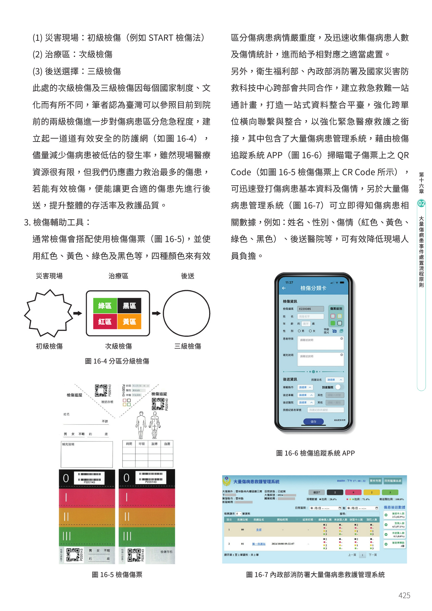
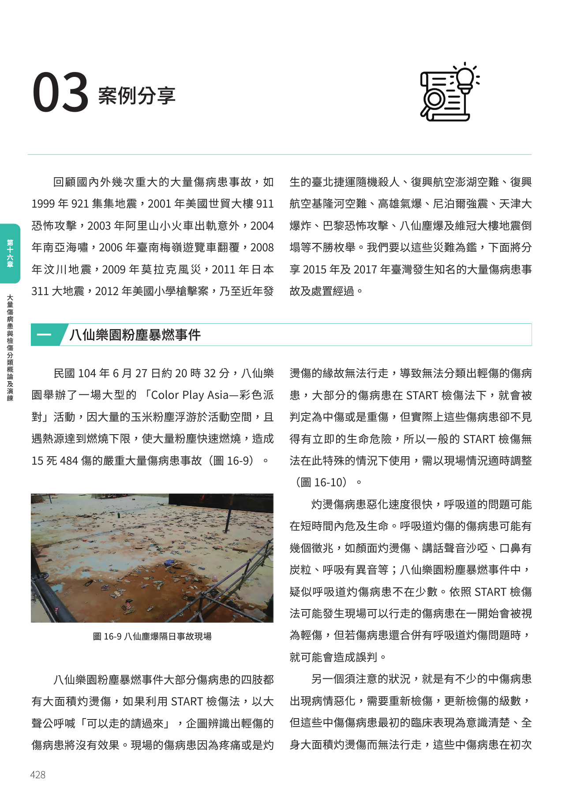
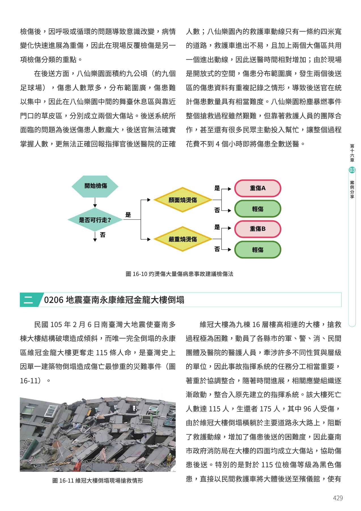
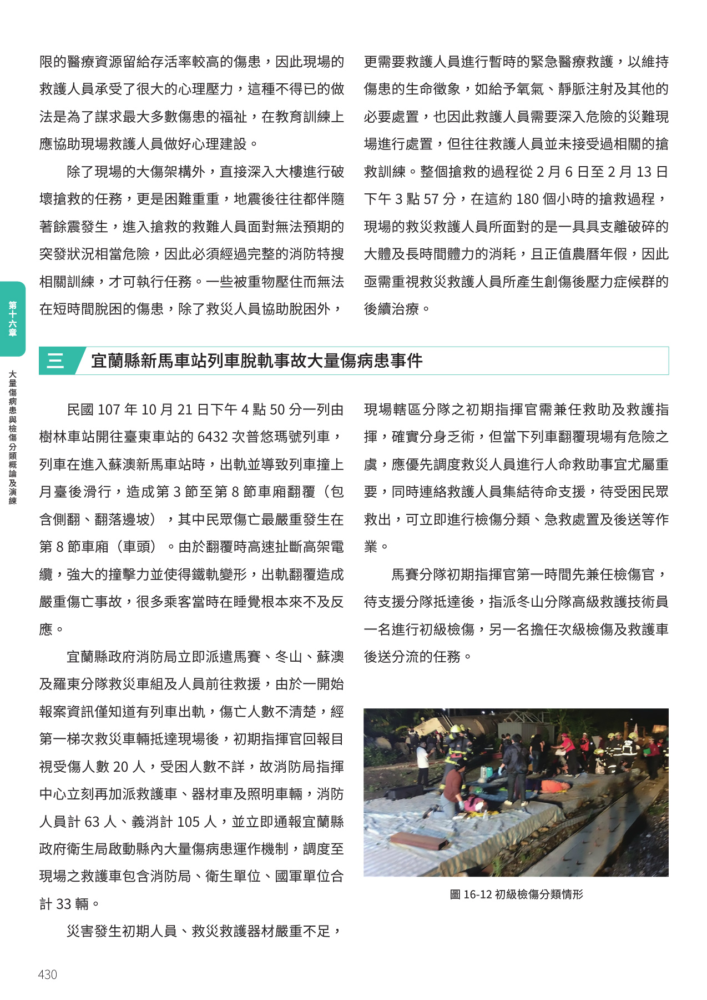
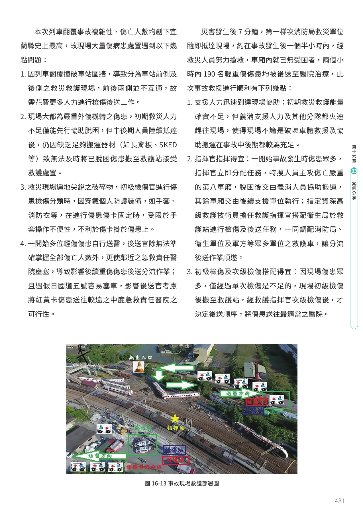
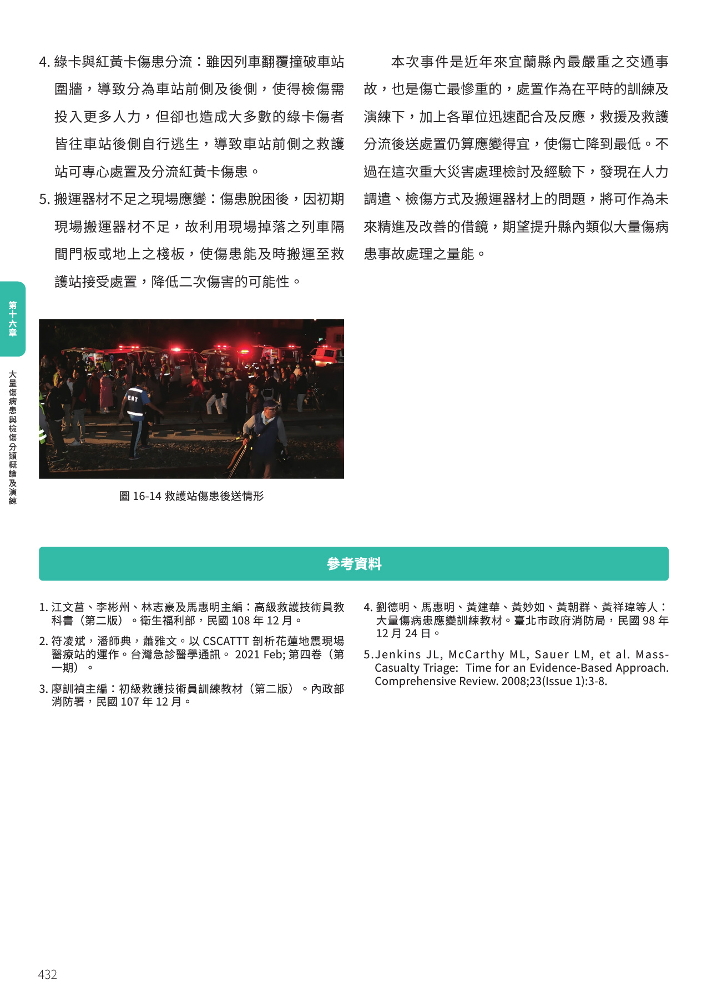

大量傷病患與檢傷分類概論及演練
當事件規模超過平時救援量能，關鍵不再只是「逐一救治」，而是快速啟動特殊動員、建立指揮、分配有限資源，讓最多傷病患獲得適當照護。
🎯 學習目標
- ☑認識大量傷病患的定義與因地制宜的啟動標準。
- ☑熟悉大量傷病患事件的處置原則與現場指揮。
- ☑瞭解檢傷分類的目的、原則、顏色與方式。
- ☑熟練檢傷傷票、追蹤 APP 與管理系統等實務工具。
- ☑從八仙、維冠與新馬案例討論制度如何依現場修正。
編撰委員：陳玉龍 醫師、楊文宏 醫師、陳暉翰 教官、李均祈 教官
本章主線：從「超載」到「分流」
01 大量傷病患的定義與啟動標準
核心不是一個固定數字，而是需求超過現場救護資源負荷。
《緊急醫療救護法施行細則》將大量傷病患定義為：單一事故或災害的傷病患人數達 15 人以上，或預判可能達 15 人以上。
- 各縣市醫療資源不同，固定 15 人不一定能一體適用。
- 當傷病患數量或嚴重度，已超過現場可用人力、車輛與醫院承載量時，就應考慮啟動大量傷病患應變。
- 啟動後要建立事故指揮體系，才能有效管理並控制整體救援。
- 各機關與單位應事前訂定共同策略，避免真正發生時才臨時協調。
一個好用的判斷句
「如果用平時的派遣與處置方式，已無法在合理時間內安全完成救援，就要切換成大量傷病患模式。」
| 等級 | 傷病患人數 | 建議動員與聯繫 |
|---|---|---|
| Level 1 | 5–10 人 | 2 個 BLS 後送單位、1 個 ALS 後送單位；空中救護待命；聯絡 2 家附近醫院與外傷中心。 |
| Level 2 | 11–20 人 | 6 個 BLS、2 個 ALS、1 架直昇機；聯絡 3 家附近醫院與 2 家區域外傷中心。 |
| Level 3 | 21 人以上 | 8 個 BLS、2 個 ALS、2 架直昇機；聯絡 4 家附近醫院與 2 家區域外傷中心。 |
超過平時負荷，但原有系統可承擔，且可在 1 小時內完成應變。
超過平時負荷，必須仰賴支援，預計應變時間超過 1 小時。
地區內支援不足，必須啟動 EOC 等單位進行區域應變。
例：10 位立即送醫傷患 → 10 ÷ 2 ＋ 1 ＝ 6 台。
02 4S、METHANE 與 ICS
第一台救護車不是急著處理第一位傷患，而是先讓後續所有人知道：現場是否安全、發生什麼、需要什麼、誰在指揮。
交通、科技與社會型態讓災害常以複合形式出現。大量傷病患處置不同於一般緊急救護：目標是用有限資源救治最多傷病患，迅速分辨輕重、把握黃金時間、送往合適醫院，並控制災害擴大與後續傷害。
- 平時準備、訓練並掌握可用人力與資源。
- 事件發生時快速將資源投入第一現場。
- 流程分成「抵達現場的災難管理」與「災難處置」。
- 依災害類型與現場狀況彈性調整。
抵達現場：4S
評估個人風險、安全作業區、周邊人群，以及二次爆炸、中毒或其他災害升級。
掌握地點、時間、類型、嚴重度、人數、傷情、地形、危害、路線與所需資源。
迅速回報，讓適當人員與裝備抵達、關鍵單位啟動並取得安全路線。
建立 ICS、共同指揮與功能分組，讓跨單位按同一計畫行動。
- 1. 評估：如何安全進入現場，並安全救出傷患。
- 2. 設置：若有二次災害，如何配置緊急疏散動線。
- 3. 執行：建立安全區概念，持續因應環境變化。
大量傷病患之後仍可能再發生另一個災害，疏散與搜救計畫必須同時保護傷患及搶救人員。
- 1. 事故地點
- 2. 發生時間
- 3. 類型與嚴重度
- 4. 傷病患人數
- 5. 嚴重度與傷害類型
- 6. 地形、環境與危害物質
- 7. 進出路徑與集結點
- 8. 所需資源及數量
重點是將衝擊區、傷患疏散、醫療救護、指揮、物資集結與車流分開，避免救援動線互相干擾。
- 讓適當數量、具備所需專業技能的應變人員抵達。
- 啟動現場可能需要的關鍵單位。
- 提供其他應變者最安全的進場路線。
- 動員適當設備與物資前往現場。
- 迅速向指揮中心完成狀況回報。
Major incident
是否為災難／是否啟動
Exact location
精確地點、道路、地形
Type
災害類型
Hazard
現有或潛在危害
Access / egress
進出方式與動線
Number
估計人數與傷患類型
Emergency services
需要哪些支援與車輛
三位管理幕僚
- 安全官：可緊急制止危險行動，確保應變安全；複雜事故需整合多方專家。
- 聯絡官：聯繫政府、非政府組織與民間救難團體。
- 資訊官：面對媒體與發布資訊；指揮官宜避免直接面對媒體。
四個功能部門
- 執行：依計畫執行，可分現場救護、待命、警戒、災害控管等支部。
- 計畫：蒐集分析資訊、資源監控、預測變化與替代方案。
- 後勤：醫療照護、餐飲與設備補給；短事件可不設。
- 財務：成本、人員工時、保險、器材損壞與徵用補償紀錄。
ICS 具系統化與彈性，不是每次都要完整展開。短時間、資源充足的事件可省略後勤與財務；長時間倒塌搜救則必須建立。
檢傷分類、四色標示與 START
檢傷不是一次性的貼標籤，而是隨病情與救援階段持續更新的資源配置工具。
Triage 源自法語 Trier「尋找、選擇」。其目的，是在有限醫療資源下快速區分嚴重度，優先處理最具生命危險、且及時治療能明顯提升存活率的傷患。
檢傷分類概念由戰爭發展至民間運用；顏色讓現場人員能快速辨識處置順序。
- 1. 災害現場：初級檢傷，例如 START。
- 2. 治療區：次級檢傷，重新評估並調整級數。
- 3. 後送選擇：三級檢傷，安排順序與目的醫院。
各國制度與文化不同；臺灣可參照到院前兩級檢傷，再建立安全有效的防護網。
重傷／立即治療
傷勢危及生命，但及時治療可大幅提升存活率，第一優先。
中傷／暫緩治療
有顯著傷害，但稍微延遲不致危及生命或造成嚴重後遺症，第二優先。
輕傷
通常可自行行走，延遲處置不影響生命；多可由一般人員協助，第三優先。
死亡／瀕死
明顯死亡或即使投入大量資源，存活率仍不高，最後處置。
1983 年由美國 Hoag Hospital 急診護理人員與南加州消防局共同發展。依「能否行走 → 呼吸 → 循環 → 意識」快速排序。
集中後進行二次檢傷
進入呼吸速率判斷
打開呼吸道再檢查；仍無呼吸＝黑色
無橈動脈搏動或微血管填充 ≥2 秒 → 紅色
不能遵從簡單指令 → 紅色；可以 → 黃色
- 1–8 歲兒童可採以兒童生理特性設計的 JumpSTART。
- 傷患生命徵象會隨時間惡化，可能由黃轉紅、紅轉黑，必須反覆檢傷。
- START 只是眾多方法之一，不是所有災害都適用；應依時間、地點、傷害機轉與資源修正。
| 顏色 | 傷勢 | 處置順序 |
|---|---|---|
| 紅 | 重傷 | 第一優先 |
| 黃 | 中傷 | 第二優先 |
| 綠 | 輕傷 | 第三優先 |
| 黑 | 死亡／瀕死 | 最後處置 |
3T、檢傷工具與完整處置流程
現場救護可整理為 Triage、Treatment、Transport；第一梯次人力不足時可兼任角色，支援抵達後再展開 ICS。
檢傷官
快速辨識危險等級，使最需要資源者獲得治療。
醫療官
管理治療區，給予適當處置並持續再評估。
後送官
決定後送順序、紀錄目的醫院並分派車輛。
集結官
設置車輛集結點與良好動線，避免交通紊亂。
檢傷傷票以紅、黃、綠、黑標示並收集人數與傷情。跨部會一站通計畫進一步整合 QR Code、檢傷追蹤 APP 與大量傷病患管理系統，快速記錄姓名、性別、級數及後送醫院，降低統計與回報負擔。

先完成初級分類；進入治療區後做次級檢傷；後送前再做三級檢傷。檢傷結果必須能隨病情改變。
- 入區前已完成分級。
- 依紅黃綠黑分區。
- 黑區位置避免心理創傷。
- 再評估病情惡化。
- 保留安置、器耗材與隔離空間。
- 管制進出路線。
- 位置標示清楚。
- 送醫前再次檢傷並安排順序與醫院。
- 確認、記錄基本資料及目的醫院。
- 選擇合適車輛與設備，例如綠牌傷患可由小型巴士統一載送。
安全評估與初級檢傷
紅／黃／綠分區與次級檢傷
三級檢傷、集結與分流送醫
- 必要時拍照存證，例如發現黑色傷患的位置。
- 評估現場環境是否可能造成感染。
- 關注救災救護人員創傷後壓力症候群（PTSD）。
- 完整紀錄，事後檢討問題並提出解法。
- 檢討結論必須透過實際演習驗證，否則容易流於空談。
案例一 八仙樂園粉塵暴燃事件
特殊傷害機轉會讓一般 START 產生系統性誤判；此案凸顯反覆檢傷與現場修正的重要。
大量傷病患並非罕見：921 集集地震、美國 911、阿里山小火車出軌、南亞海嘯、臺南梅嶺遊覽車翻覆、汶川地震、莫拉克風災、日本 311、美國校園槍擊，以及臺北捷運隨機殺人、復興航空澎湖與基隆河空難、高雄氣爆、尼泊爾強震、天津大爆炸、巴黎恐攻、八仙塵爆與維冠大樓倒塌，都提醒第一線必須能快速啟動應變機制。
「Color Play Asia—彩色派對」中，大量玉米粉塵遇熱源達燃燒下限後快速燃燒。多數傷患四肢大面積燒燙傷，因疼痛等緣故無法行走；依 START 單靠「可以走的請過來」會把他們判為黃或紅，但當下未必有立即生命危險。
呼吸道灼傷可能在短時間內致命。顏面燒燙傷、聲音沙啞、口鼻炭粒、異常呼吸音是重要警訊，不能因「能走」就判為綠色。

不能只看步行能力
- 沒有顏面或嚴重燒燙傷者，才可暫列輕傷。
- 中傷者可能從意識清楚、全身燒傷但不能走，迅速惡化為重傷。
- 現場反覆檢傷是必要程序，不是重複工作。
- 場地約 9 公頃、傷患分布廣，在舞臺休息區與入口草皮分設兩個大傷站。
- 後送官難掌握總人數與正確目的醫院。
- 園內救護車僅一條約 4 公尺寬道路，進出不易。
- 兩個大傷區共用進出動線，送醫時間增加。
- 開放空間造成兩區資料重複紀錄，統計困難。
- 救護人員團隊合作，許多民眾主動協助。
- 不到 4 小時即將現場傷患全數送醫。
- 災害型態特殊時，須調整檢傷方法與後送分流。
- 大量紅黃傷患集中可能壅塞急救責任醫院，後送官應掌握醫院容量。
案例二 0206 地震臺南永康維冠金龍大樓倒塌
長時間、高危險、跨層級搜救，考驗 ICS 彈性、後勤補給與救護人員心理支持。
- 唯一完全倒塌的維冠金龍大樓奪走 115 條人命，是臺灣單一建築倒塌死亡最慘重災難。
- 9 棟、16 層相連建築，任務需要軍、警、消、民間團體與醫院協調整合。
- 大樓橫躺永大路阻斷救護動線，臺南消防局在四面設大傷站協助後送。
- 115 位黑色傷患以民間救護車後送至殯儀館，將有限醫療資源留給存活率較高者。

深入倒塌建築的破壞搶救，伴隨餘震與不可預期突發狀況，須經完整消防特搜訓練。
受困者無法快速脫困時，救護人員需深入危險區暫時維持氧合、循環與必要處置。
約 180 小時搜救承受親友支離破碎、體力消耗與年節壓力，須重視創傷後壓力後續治療。
有限資源下的黑色分類，不是放棄生命，而是追求最多數傷患的整體福祉；這也會對現場救護人員造成巨大心理壓力，教育訓練必須納入心理建設。
案例三 宜蘭縣新馬車站列車脫軌
翻覆、觸電風險、尖銳碎片、動線分裂與大量外傷，同時考驗指揮者在救助、檢傷與後送之間切換角色。
列車進入蘇澳新馬車站時出軌，造成第 3 至第 8 節車廂翻覆，最嚴重傷亡在第 8 節車廂。高速扯斷高架電纜、鐵軌變形，許多乘客在睡夢中來不及反應。
- 消防局派遣馬賽、冬山、蘇澳、羅東分隊與救災車組。
- 初報約 20 人受傷、受困不明，立即加派救護車、器材車與照明車。
- 消防人員 63 人、義消 105 人；現場救護車含消防、衛生、國軍單位合計 33 輛。

初期兼任救助與救護指揮；翻覆處具危險時，先調度救災人員進行人命救助。
初期一名 EMT 做初級檢傷；另一名負責次級檢傷與救護車後送分流。
支援抵達後分派第八車廂主攻、其餘車廂後續搜索，另設救護指揮官協調多單位車輛。
- 場域被車站圍牆切成前後兩側：兩側不互通，需投入更多人力檢傷與後送。
- 重傷與受困者多、搬運器材不足：除協助脫困外，後續仍缺長背板、SKED 等器材，延誤送至救護站。
- 尖銳碎片與 PPE：手套、消防衣保護人員，卻使傷卡操作與掛卡變得不便。
- 走動傷患自行送醫：後送官難掌握總數，鄰近醫院壅塞；假日國道五號也影響轉送較遠醫院。
- 綠卡與紅黃卡分流：多數綠卡往車站後側自行逃生，前側救護站才能集中處置紅黃卡傷患。


- 支援迅速：初期量能不足，但義消及其他分隊快速抵達，後期救援與搬運資源充足。
- 指揮得宜：即時分配第八車廂主攻、其餘搜索與救護指揮任務，協調消防、衛生、軍方車輛。
- 初級與次級檢傷搭配：傷患先送救護站，再由救護指揮官重新檢傷、決定順序與最適醫院。
事故後 7 分鐘第一梯次抵達；約半小時內車廂已無受困者，兩小時內 190 名傷患均送醫。
此案為宜蘭近年最嚴重、傷亡最慘重的交通事故。平時訓練、快速跨單位配合與檢傷後送分流，讓傷亡降至最低；人力調度、檢傷方式與搬運器材問題，也成為後續精進的重要依據。
- 江文莒、李彬州、林志豪及馬惠明主編：《高級救護技術員教科書（第二版）》，衛生福利部，民國 108 年 12 月。
- 符凌斌、潘師典、蕭雅文：以 CSCATTT 剖析花蓮地震現場醫療站運作，《台灣急診醫學通訊》，2021 Feb，第四卷第一期。
- 廖訓楨主編：《初級救護技術員訓練教材（第二版）》，內政部消防署，民國 107 年 12 月。
- 劉德明、馬惠明、黃建華、黃妙如、黃朝群、黃祥璋等：《大量傷病患應變訓練教材》，臺北市政府消防局，民國 98 年 12 月 24 日。
- Jenkins JL, McCarthy ML, Sauer LM, et al. Mass-Casualty Triage: Time for an Evidence-Based Approach. Comprehensive Review. 2008;23(1):3–8.